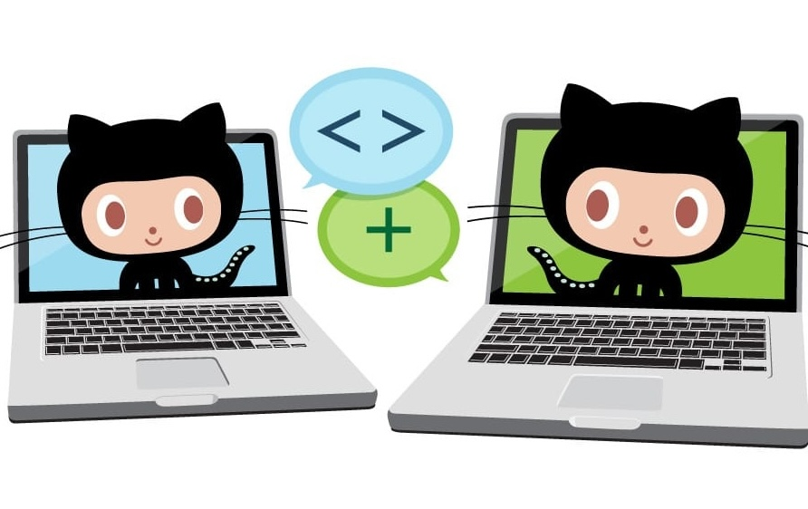
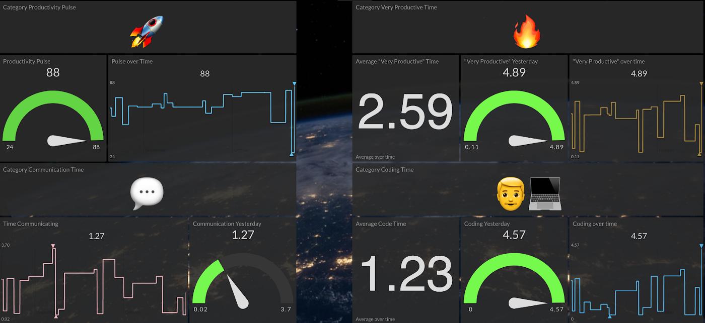

Zack Koppert
Senior Software Engineering Manager @ GitHub
Previously @ Tektronix, Open Source Team
LinkedIn Profile
Recorded Conference Talks
Portfolio
Professional
Catching Merge Conflicts Before They Catch You

Keeping repository maintainer information accurate

How to gain insight into your project contributors

How to gain insight into your project contributors

Metrics for issues, pull requests, and discussions

A tool to help you keep your open source catalog organized and up to date

An open source project to empower OSPOs everywhere

Securing and delivering high-quality code with innersource metrics

How to measure innersource across your organization

Accelerate security adoption in your organization

Launching an InnerSource Project Portal

Self Building Jenkins CI Server

Launching an Open Source Office

Automated Branch Protection Web Service

Article on Productivity Dashboard for Devs

Personal
- GitHub App - Comments on new issues
- I used this project as an opportunity to learn CI with JavaScript, CD to AWS Lambda, project documentation and security scanning with semmle.
- Article on Career Planning
Page template forked from evanca